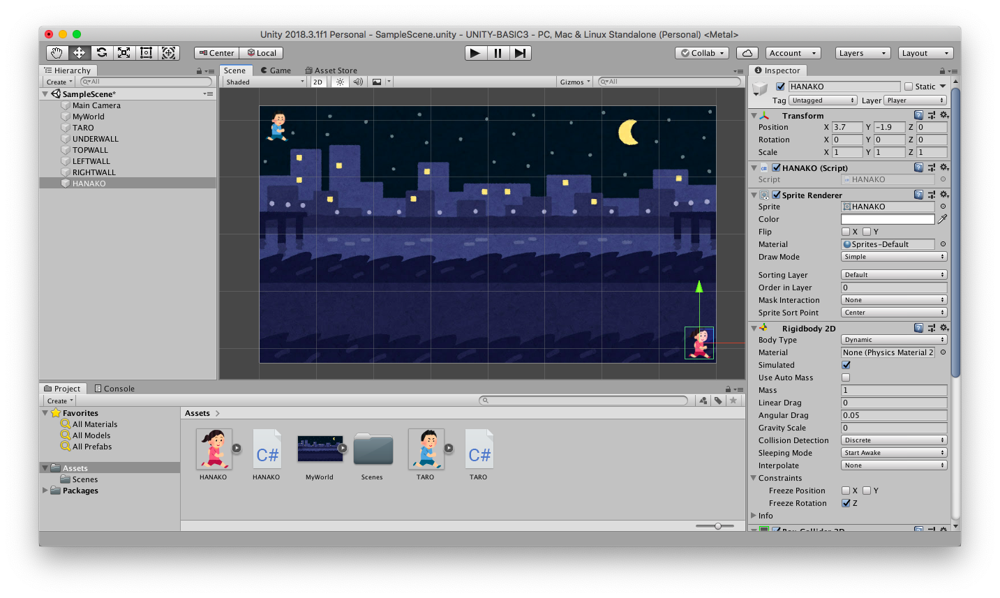

次はゲームオブジェクトに力(Force)を与えて物理的に動かしてみます。
演習を行う前に新しいシーンを作り、箱を作成します。
今回は重さ(Mass)の設定もします。
こちらのテキストに従ってシーンを新規作成し、シーン名を「Addforce Scene」にする。背景色は任意で構わない
ヒエラルキー右クリック → 3D Object → Cube で箱を新規作成し、名前を「HAKO」、Position を (0,0,0)にする
HAKO に Rigidbody コンポーネントをアタッチする
HAKO のインスペクタを表示して Rigid Body の Mass に 10 を入れる
更に Rigid Body の Use Gravity のチェックを外す
アセットフォルダの空いている部分を右クリックしてメニューを表示し、Create → Visual Scripting → Script Graph を選ぶ
アセットフォルダ内に「New Script Graph」というアセットが出来るので「Addforce Script Graph」に名前を変更する
HAKO に Script Machine コンポーネントをアタッチする
Script Machine の Graph の None と書いてあるセルに Addforce Script Graph をドロップする
実世界で何か物を動かしたい時は動かしたい方向に向かって力(単位はニュートン)を与え続ける必要があります。
力を与えるのを止めると慣性で動き続けますが、摩擦がある場合は減速してそのうち止まります。
さて Unity でゲームオブジェクトに力を与えるユニットは Rigidbody Add Force (Force) ユニット(rigidbody add force で検索)です。
このユニットを Fixed Updateイベントの中で実行し続けます。
※ 物理演算を使ってるので、今回は Update イベントではなくて Fixed Update イベントを使います
なお3次元空間なので、力は3次元ベクトル(Vector3)を使って x,y,z 方向別に指定します。
では早速図1を実行してください。
実行すると右方向に徐々にスピードを上げながら動き始めると思います。
図1. 力を与え続けて移動
さてこの例では power という Float 型の Graph 変数を用意し、
力 = 右方向ベクトル x power
で力を計算しています。
上手く動いたら power の数値を変えたり(マイナスにすると逆に動きます)、HAKO の重さ(Mass)を変えたり、方向ベクトルを変更したりするとどの様に動きが変わるか試して下さい
またコントローラを使って動かしてみても良いでしょう。
上では力を与え続けてゲームオブジェクトを動かしていましたが、現実的にはボールをバットで打ったり、爆弾で物を吹き飛ばしたりなど、瞬間的に力を加えて一気に物体を加速させることも多いです。
Unity でゲームオブジェクトに瞬間的に力を与えるユニットは Rigidbody Add Force (Force,Mode) ユニット(rigidbody add force で検索)で、Mode には Impulse を指定します。
では例を使って確認してみましょう。
まず HAKO の重さ(Mass)と Graph 変数 power の値を 10 に戻します。
次に力は1回しか与えないので、Fixed Update イベントを削除して代わりに Start イベントを使います。
その上で図2を実行してください。
実行すると右方向に一定速度で動き始めます。
上手く動いたら power の数値を変えたり(マイナスにすると逆に動きます)、HAKO の重さ(Mass)を変えたり、方向ベクトルを変更したりするとどの様に動きが変わるか試して下さい
図2. 瞬間的に力を与えて移動

ここから先は少し難しい話なので分からなければ飛ばしても結構です。
ただし Unity の物理演算機能を使いこなすためには大事な知識ですので興味のある人は是非トライして下さい。
既に摩擦で使いましたが、改めてニュートンの運動方程式についておさらいしておきます。
$m$ [kg]を物体の重さ、$a$ [m/$s^2$] を加速度ベクトル、 $F$ [ニュートン] を力とします。
するとニュートンの運動方程式は
となります。
さてこのページの 1 番目の例はオーソドックスに運動方程式を適用できます。
今回は Mass = 10 [Kg] の HAKO に対し、右方向に大きさ power = 10 [ニュートン] の力を加え続けていますので、右方向に $1$ [m/$s^2$] の加速度がかかります。
実際に1秒おきの HAKO の速度を測定したら以下の様になっていたので、だいたい理論通り動いていることが分かります。
開始約 1 秒後 → 速度 約 1 m/秒
開始約 2 秒後 → 速度 約 2 m/秒
開始約 3 秒後 → 速度 約 3 m/秒
開始約 4 秒後 → 速度 約 4 m/秒
開始約 5 秒後 → 速度 約 5 m/秒
一方、2番目の例( mode = Impulse)で Add Force ユニットに入力しているベクトルは実は力ではなくて運動量(単位はニュートン秒)になります。
つまり Add Force ユニットの mode を Impulse にすると運動方程式ではなくて運動量の計算が適用され
重さ(Mass) ・ 速度ベクトル(Velocity) = Add Force の入力ベクトル (mode = Impulse の場合)
という計算式に変わります。
今回は Mass = 10 [Kg] の HAKO に対し、右方向に大きさ power = 10 [ニュートン秒]の運動量を与えましたので、1 フレーム後に HAKO は右方向に 1 [m/秒] の速度で動き始めます。
実際に HAKO の速度を測定すると実行開始直後からずっと 1 [m/秒]の速度で動いていることが分かります。